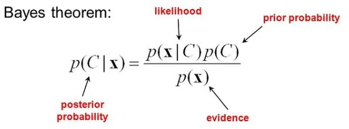

Contributors: Dr. Ahmad Mustafa, Dr. Motaz Alfarraj, Dr. Ashraf Alattar, Dr. Chen Zhou
Teaching Assistants with remarkable contributions include: Kuo-Wei Lai, Wuyang Du, Shiva Mahato, Michael Zhou, Ninghan Zhong
Disclaimer: All content of these notes are part of this course at Georgia Tech. Any re-use or distribution is not permitted without pre-approved permission. All these notes belong to, created by, and copyrighted for Ghassan AlRegib and Mohit Prabhushankar, Georgia Tech, 2021–2028.
This lecture dives into different forms of autoencoders and their applications, specifically focusing on regularized autoencoders, including sparse autoencoders, denoising autoencoders, and variational autoencoders. Regularized autoencoders gain distinct properties by introducing constraints through various forms of regularization, enhancing their versatility for tasks such as data compression, feature extraction, noise removal, and new content generation.
First, we examine sparse autoencoders, which encourage only a few neurons to activate for each input, resulting in compact representations that highlight essential data features. Another example is denoising autoencoders, designed to reconstruct clean data from noisy inputs, making them effective for tasks like noise removal. Finally, we explore variational autoencoders, which employ probabilistic techniques to create smooth, flexible data representations, enabling the generation of new samples with characteristics similar to the original data.
1.2 Recap of last lecture
In our last lecture, we explored autoencoders – neural networks designed to encode input data into a compressed latent representation to capture and retain essential features while discarding redundant information. This compressed representation is then decoded to accurately reconstruct the original data on the output side. The last lecture focused on the architecture of autoencoders to explore how they perform dimensional reduction, feature extraction, and data reconstruction effectively.
1.2.1 Highlights from last lecture
Intro to Autoencoders: Autoencoders are neural networks composed of two main parts: an encoder, which compresses the input unlabeled data into a compact, lower-dimensional latent representation, and a decoder, which reconstructs the original data from this representation. They are unsupervised learning tools that help simplify data by identifying essential features and hidden structures, making data easier to store and process through dimensionality reduction.
Types of Autoencoders:
Fully-Connected Autoencoders: We dove into the structure of basic autoencoders, which are applied to the MNIST dataset (a classic set of handwritten digit images). We also covered how both linear and nonlinear versions reconstruct images, with visuals showing what each type learns.
Convolutional Autoencoders: These use convolutional layers to capture spatial details in images, which is great for preserving patterns. Techniques like max pooling and unpooling were introduced to adjust image resolution as needed.
Transposed Convolutions: This section explained how transposed convolutions work as a learnable way to “scale up” images, comparing this to max-unpooling for upsampling.
Experimental Results: We wrapped up the lecture by comparing how well linear, nonlinear, and convolutional autoencoders perform in terms of quality and accuracy when reconstructing images.
Limitations of Autoencoders: Basic autoencoders can often overfit the training data, capturing noise and irrelevant details rather than general, meaningful patterns. This is especially problematic with high-dimensional data, where the model may memorize specific inputs instead of learning generalizable features.
Example of Overfitting
Notice in Figure 19.1 with each application of the Reconstruction Loss equation, the line fits the data better each time in graphs 1-4. However, notice in graphs 5 and 6 that overfitting takes place. The curve swirls up and down adding noise to our curve fitting. In graph 6, the model has memorized the exact locations of the input data. If I were to introduce new data to this model, it would struggle to properly classify the data and yield poor performance overall. To solve overfitting, we introduce regularization techniques for better classification and thus performance.
1.3 Regularized Autoencoders to the Rescue
Autoencoder limitations have led to the development of various regularized and extended autoencoder models, like sparse and denoising autoencoders, which overcome the weaknesses arising from overfitting for more complex tasks.
1.3.1 Regularized Autoencoders Overview
Regularization techniques in autoencoders are used to prevent the model from simply learning an identity mapping (i.e., copying the input directly to the output) without capturing meaningful features. Regularization encourages the model to capture essential features even when using a high-dimensional latent space (Z). Regularizaion encourages the model to find compressed, informative representations of the data, improving its ability to generalize to new data and avoid overfitting. Our three key regularization techniques involve sparse, denoising, and variational autoencoding.
Objective: To avoid direct identity mapping as in Figure 19.2 by forcing the encoder-decoder pair to find meaningful patterns, making it easier to generalize to new data. Figure 19.2 below shows that without regularization, the model could cheat by merely copying the input to the output without learning any new patterns. This would be akin to someone memorizing the answers for a test without understanding how to arrive at the correct answer.
Regularization avoids the undesirable 1:1 mapping without learning any new patterns.
Key Points
Higher-dimensional latent spaces (Z) allow more complex data representations. Notice in Figure 19.2 that instead of a smaller dimensional latent space (Z) as seen with regular autoencoders, the latent space (Z) is normally equal to or larger than both the input or the output.
Sparse Autoencoders use constraints to limit the number of active neurons, leading the model to focus on unique features in the data.
Motivation:
Sparse representations activate only a subset of neurons, which encourages the model to learn distinctive statistical patterns useful for other tasks, like classification. By only activating a subset of neurons, the autoencoder cannot cheat because it cannot use all neurons during any given pass. A sparse autoencoder is still compressing the data like a regular autoencoder, but it does so by suppressing certain neurons during each pass.
Only a subset of neurons are activated in yellow for any given pass.
L1 Regularization: Applied to weights in the neural network or directly to latent activations. It encourages some weights or neuron activations to be exactly zero, leading to a sparse network representation.
KL Divergence: Generally applied to probability distributions. In plain autoencoders, it’s used in regularized autoencoders to push the latent space towards a specific distribution, such as Gaussian, which is useful for organizing or structuring the latent space ensuring that data points close to each other in the input space also stay close in the latent space, thereby making the latent space more structured..
Methods for Enforcing Sparsity:
Here is the formula for the Total Reconstruction Loss. Then notice that
L1 regularization technique that uses fewer activated neurons
By pushing some weights or activations to zero, L1 regularization creates a more compact, efficient representation, often leading to a model that uses fewer parameters to achieve similar performance.
L1 Regularization: Suppresses activations toward zero, creating a sparse representation.
AutoEncoder under L1 regularization when fewer neurons are activated
L1 regularization helps autoencoders learn only the most essential features of the data by sparsifying the latent representation to filter out less relevant features, acting as a form of noise reduction since only a few neurons are active, focusing on essential patterns in the data.
KL Divergence: Enforces sparsity by penalizing the deviation of activations from a desired level, creating a sparse average activation.
KL divergence is useful when you want to impose a specific structure on the latent space. This can help in applications where you need the latent space to be smooth or structured, such as for continuous data transformations.
KL divergence shapes the latent space to be continuous and structured, often resulting in clusters of similar data representations that are close to each other.
This structure allows for smooth transitions between clusters, so the latent space acts as a continuous and interpretable representation of the data.
KL Divergence ensures continuity by minimizing divergence between a sample and a fixed prior distribution.
By minimizing the KL divergence, the model is encouraged to keep the latent representations close to its prior Gaussian structure. This enforces certain properties on the latent space, such as smoothness and continuity, because the learned distribution is encouraged to spread out in a controlled way that resembles a Gaussian.
This does not mean that all samples are close to each other, but rather that the latent space doesn’t have large gaps or discontinuities. The latent representations will be smoothly spread out across the space, as the KL divergence regularization discourages extreme deviations from the Gaussian prior.
Training:
Sparse autoencoders add regularization terms to the loss function to manage the level of sparsity.
Example of Sparse AE using sparse neurons to represent zero.
1.3.3 Denoising Autoencoders
Denoising Autoencoders learn robust representations by training on corrupted input data, making them valuable for applications needing resilience to input noise.
Objective: To learn features that can “denoise" input data by reconstructing clean versions from corrupted versions.
Denoising AutoEncoder and how noisy input leads to clean output.
From Figure 19.9, the manifold in the latent space is where the “true" or clean representations of data points lie. This manifold is continuous and smooth, representing the structure the autoencoder has learned from the clean data.
Outside this manifold, there are discontinuities in the latent space, where points represent noisy or corrupted inputs.
A denoising autoencoder maps noisy inputs back to the nearest point on the manifold. This means that points off the manifold (representing corrupted versions of data) get pulled back to the nearest point on the continuous manifold.
Training Process:
A noisy input is fed to the encoder, and the model aims to reconstruct the clean version. From Figure 19.9, notice that the dimensionality of the latent space (Z) does not play a major role in denoising. The major contributing factor happens within the latent area using a refined loss function.
Loss Function that trains Denoising AutoEncoder model.
The goal of the loss function in Figure 19.10 is to make this difference as small as possible, meaning we want \(\hat{X}\) (the reconstructed data) to be as close as possible to X (the original clean data).
The squared difference \(\| X - \hat{X} \|^2\) means that larger errors (bigger differences between the original and reconstructed data) have a bigger impact, encouraging the model to work harder to reconstruct the original data accurately.
\(E_\theta\): This is the encoder function, which takes the noisy input \(\tilde{X}\) and compresses it down to a latent representation (a smaller, more abstract form of the data).
\(G_\phi\): This is the decoder function, which takes the latent representation and tries to reconstruct it back into the original clean data format.
So, \(\hat{X} = G_\phi(E_\theta(\tilde{X}))\) means:
First, the noisy input \(\tilde{X}\) goes through the encoder \(E_\theta\), which creates a compressed version.
Then, this compressed version is passed through the decoder \(G_\phi\), which tries to reconstruct the data to match the original clean data as closely as possible.
Use Cases: Effective for image denoising and other tasks where noise-resilient features are beneficial.
Disadvantages: The denoising autoencoder has discontinuities within its latent space. This means that if you randomly sample from points within the latent space (Z), there’s no guarantee that these points would map to realistic or meaningful outputs.
1.3.4 Variational Autoencoders
Variational autoencoders (VAEs) combine compression with generative modeling, allowing us to generate novel variations of inputs by sampling from a learned latent space. Standard autoencoders lack continuity in their latent spaces, leading to unrealistic outputs if randomly sampled. Unlike standard autoencoders, VAEs model the latent space as a probability distribution, enabling smooth and continuous transitions in the generated data, ideal for tasks like image synthesis and anomaly detection.
Probabilistic Framework
Standard autoencoders lack continuity in their latent spaces, leading to unrealistic outputs if randomly sampled. In a Variational Autoencoder’s probabilistic framework, each input is encoded not as a single fixed point but as a probability distribution in the latent space, as shown in Figure 19.11.
Variational autoencoder and the continuous latent space visualization
Rather than mapping inputs to a specific point, the encoder network outputs parameters (mean and variance) that define a Gaussian distribution for each input. This distribution represents the encoded data in a structured latent space, ensures that points sampled from the latent space are close to each other in a continuous manner, allowing smooth interpolation between data points. Sampling from this distribution enables the generation of realistic outputs that resemble the training data. The decoder network then takes these sampled points from the latent space to reconstruct data that closely matches the original input, enabling the VAE to both learn meaningful representations and generate new, coherent data samples, allowing for:
Smooth transitions between data points (e.g., blending between images).
Interpolation of data (e.g., generating new data points that are combinations of existing ones).
Working Principles
In this section, we will cover mathematics and probability principles used in variational autoencoders.
Modeling via MLE
In Variational Autoencoders (VAEs), the goal is to model the true data distribution \(p(X)\) using a probabilistic model \(p_{\phi}(X)\), where \(\phi\) represents the parameters of the generation model. This is achieved by maximizing the likelihood of the observed data through Maximum Likelihood Estimation (MLE).
The generative process in VAEs involves sampling a latent variable \(Z\) from a prior distribution \(p(Z)\), often chosen to be a simple Gaussian. Given \(Z\), the model then samples \(X\) from the conditional distribution \(p_{\phi}(X|Z)\), which approximates the real data.
This process can be mathematically expressed by the marginal likelihood:
Intuitively, the VAE aims to find the optimal parameters \(\phi\) by adjusting them to maximize the likelihood of the training data. This involves finding a set of parameters such that the generated samples \(\hat{X}\) from the model resemble the real data \(X\) as closely as possible, thereby learning a latent space representation that captures the essential structure of the data.
Likelihood and Posterior Intractability
In Variational Autoencoders (VAEs), calculating the likelihood \(p_{\phi}(X)\) directly is intractable due to the integration over all possible values of the latent variable \(Z\):
This integral is challenging to compute, particularly for high-dimensional latent spaces, as it requires evaluating \(p_{\phi}(X|Z)\) for every possible \(Z\). This computational burden makes it impractical to calculate the likelihood exactly.
Furthermore, the posterior distribution \(p_{\phi}(Z|X)\), which describes the probability of the latent variable \(Z\) given the data \(X\), is also intractable. By Bayes’ theorem:
The exact computation of \(p_{\phi}(Z|X)\) requires knowing \(p_{\phi}(X)\), which, as explained, is difficult to evaluate directly.
Address the Intractability
VAEs address the problem with an approximation technique:
Variational Inference: Instead of directly computing \(p(z|x)\), VAEs approximate the posterior using a simpler, tractable distribution \(q(z|x)\), often chosen as a Gaussian distribution.
Maximize Variational Lower Bound (“ELBO"): VAEs maximize a lower bound on the log-likelihood of the data (called the Evidence Lower Bound or ELBO) instead of the likelihood directly. This objective function combines a term for data reconstruction and a term that brings \(q(z|x)\) closer to \(p(z|x)\) by minimizing the KL divergence between them.
This approach allows VAEs to learn an approximate posterior \(q(z|x)\) and work around the intractability, making training feasible.
Variational Lower Bound (ELBO): VAEs optimize this bound to make the posterior distribution resemble a simple prior (usually Gaussian).
Evidence Lower Bound Equation (ELBO)
The ELBO equation is derived from Bayes’ rule by making simplifying assumptions to approximate the intractable (too complex or computationally expensive to solve directly) posterior probability distribution
Bayes Rule
To get around this, we approximate \(p(Z \mid x)\) with a simpler distribution \(q(Z \mid x)\) (often Gaussian), known as the variational distribution. using these simplifying tricks.
The goal is to make \(q(z \mid x)\) as close as possible to \(p(z \mid x)\). We measure the “distance" or difference between \(q(z \mid x)\) and \(p(z \mid x)\) using KL divergence, which tells us how well \(q(z \mid x)\) approximates \(p(z \mid x)\).
By taking the log of both sides after simplification, you arrive at the ELBO equation, Figure(19.12).
Just as we learned with the denoising AE wherein points in the latent space map noisy inputs to the nearest point on the manifold, in the same way, the ELBO equation helps the VAE “pull" the posterior distribution towards the prior distribution, which helps maintain a smooth, structured latent space.
Reparameterization Trick
The reparameterization trick addresses the challenge of training variational autoencoders (VAEs), which require backpropagation through random sampling in the latent space. Without this trick, the randomness of sampling would block gradients from flowing back through the network, making it impossible to optimize the VAE effectively.
Reparameterization Trick: Used to backpropagate through random variables by expressing latent samples as predictable, rule-based functions of learned parameters.
In the VAE, as in Figure 19.14, we want to sample a latent variable \(z\) from a Gaussian distribution with a learned mean \(\mu\) and standard deviation \(\sigma\). The trick is to rewrite the sampling step as a predictable, rule-based transformation.
Normally, we sample \(z\) directly from \(\mathcal{N}(\mu, \sigma^2)\), but instead, we reparameterize it as:
\[z = \mu + \sigma \cdot \epsilon\]
where \(\epsilon\) is a random variable drawn from a standard Gaussian distribution \(\mathcal{N}(0, 1)\).
Now, \(z\) is a function of \(\mu\), \(\sigma\), and \(\epsilon\). We can backpropagate through \(\mu\) and \(\sigma\) directly, while \(\epsilon\) takes care of the randomness.
Visualization of Reparameterization Trick
The Reparameterization Trick is a clever method that allows us to train the VAE efficiently, even though the model involves randomness (sampling) in the latent space. Normally, randomness makes it hard to use backpropagation (the method for training neural networks) due to unpredictablity, but the reparameterization trick turns this randomness into a predictable, rule-based function that we can backpropagate through.
Backpropagation with and without Reparameterization
From Figure 19.15 notice in the original form that since z is randomly sampled from this distribution, it’s hard to compute the gradient for backpropagation directly because randomness makes it unpredictable. However, in the reparameterized form, notice that we have isolated randomness within epsilon, \(\epsilon\). This allows backpropagation to flow through the network as usual, making training possible.
Analogy — Imagine that z represents a fancy coffee machine with buttons for flavor (mean) and strength (variance). Instead of randomly guessing each time, you adjust the settings (mean and standard deviation) and then add a small, fixed amount of variation (like a splash of milk) to each cup to get consistent results with a bit of variability. This “reparameterization" lets us control and fine-tune the machine settings, so we get the best results every time.
Key Advantages
The VAE is designed to handle two modes of operation because of its structured latent space, allowing it to recreate known data and generate new, realistic samples. This dual functionality is what makes VAEs versatile and powerful as both a reconstruction model and generative model.
Reconstruction Mode (Recreating Input Data):
When you input a specific data point (like an image of a digit) into the VAE, the encoder maps it to a latent representation (a mean and standard deviation) in the latent space. The decoder then uses this latent representation to reconstruct the original input data.This process is used during training and evaluation to see how well the VAE can recreate known data.
Generation Mode (Creating New Data):
To generate new, original data, you don’t provide an input image to the encoder. Instead, you directly sample from the latent space. Since the VAE’s latent space is designed to follow a Gaussian distribution, you can sample a random point from this distribution (like drawing random points from a normal distribution) and feed it directly into the decoder. The decoder interprets this random latent point as if it were a valid encoding of some data and generates a new output based on it.
Enables generation of novel samples by sampling from the latent space.
Generation Mode where the encoder is bypassed and new data is created from old data
Smooth transitions in the latent space allow for controlled variations in generated outputs.
Generation mode where the encoder is bypassed allowing for a smooth believable transition (morphing) due to continuity in the latent space and artificially adding eyewear where none existed previously.
Because the VAE is designed to approximate a continuous and structured latent space (often Gaussian), moving from one point to another in the latent space leads to gradual, believable changes in the generated image. This gives the effect of morphing from one image to another in a realistic way.
This structured latent space is what allows the VAE to create “new" images that appear realistic and fit within the patterns it learned from the training data, even though they don’t correspond to any specific “ground truth" image.
1.4 Summary
Autoencoders are unsupervised neural networks designed to learn efficient data representations by encoding input data into a compressed latent space and then reconstructing it as closely as possible at the output. While basic autoencoders focus solely on minimizing reconstruction error, regularized variations introduce additional constraints that enhance their utility and versatility. L1 regularization encourages sparsity in the latent space, making the model focus on key features and filter out noise. KL divergence regularization, often used in sparse and variational autoencoders, enforces a specific distribution (typically Gaussian) on the latent space, creating a structured and continuous space that is useful for generation and interpretability. Denoising autoencoders add robustness by training the model to reconstruct clean data from noisy inputs, improving generalization and noise tolerance. Variational autoencoders (VAEs) take this a step further by using probabilistic sampling in the latent space, allowing for smooth interpolation between data points and the generation of novel, realistic outputs. Together, these variations extend the foundational autoencoder’s capabilities, making it applicable in feature extraction, dimensionality reduction, data generation, and anomaly detection. Each regularization approach refines the autoencoder’s performance to fit specific tasks, whether through sparsity, structured continuity, robustness, or generative power.
See Figure 19.2, 19.3, 19.9, and 19.11 for the image sourced from Data School. (n.d.). Autoencoders in deep learning [Video]. YouTube. https://www.youtube.com/watch?v=CiexUMrNtBQ
See Figure 19.4 for the image sourced from StatQuest with Josh Starmer. (n.d.). Regularization and overfitting [Video]. YouTube. https://www.youtube.com/watch?v=xwrzh4e8DLs
alregib2024neural] @miscalregib2024neural, author = Ghassan AlRegib and Mohit Prabhushankar, title = Lecture 18: Autoencoders, year = 2024, howpublished = ECE 4803/8803: Fundamentals of Machine Learning (FunML), Georgia Institute of Technology, Lecture Notes, note = Available from FunML course materials
See Figure 19.9, 19.15 and 19.16 for the image sourced from alregib2024neural] @miscalregib2024neural, author = Ghassan AlRegib and Mohit Prabhushankar, title = Lecture 19: Autoencoder Extensions, year = 2024, howpublished = ECE 4803/8803: Fundamentals of Machine Learning (FunML), Georgia Institute of Technology, Lecture Notes, note = Available from FunML course materials
1.7 Common Notations
2
\(\mathbf{b}\): Bias vector
\(C_k\): K-th cluster
\(d(\mathbf{x_j, x_k})\): Dissimilarity between \(\mathbf{x_j, x_k}\)
\(E_\theta\): Encoding function
\(f(\cdot)\): Trained neural network
\(\mathbf{G}(t)\): Second moment at time t
\(G_\Phi\): Decoding function
\(\mathbf{H(\theta)}\): Hessian matrix
\(h_i, h_j\): Representation space vectors
\(k^{(i)}\): Number of neurons in the \(i^{th}\) layer
\(M\): Number of features in a feature vector
\(m\): Degree of polynomial
\(m_j\): J-th centroid
\(N\): Number of data samples
\(P\): Predicted class
\(P^{(k)}\): The number of neurons in layer k
\(Q\): Contrast class
\(Q_k\): Computed clustering for k-th cluster
\(R_k\): Ground truth clustering for k-th cluster
\(s(\mathbf{x_j, x_k})\): Similarity between \(\mathbf{x_j, x_k}\)
\(v(t)\): First moment at time t
\(\mathbf{W}\): Weight matrix
\(w_{ij}\): Degree of membership of \(\mathbf{x_i}\) in \(C_j\)
\(\mathbf{X}\): Matrix of feature vectors (dataset)
\(\mathbf{\hat{X}}\): Reconstruction of data
\(\widetilde{\mathbf{X}}\): Corrupted input
\(\mathbf{x_i}\): Feature vector (a data sample)
\(\mathbf{x_{:,i}}\): Feature vector of all data samples
\(x_i\): A single feature
\(\mathbf{Y}\): Output matrix
\(y_i\): Target class
\(y^{c}\): Predicted logit for class P
\(y^{i}\): Logit for any class i
\(\mathbf{Z}\): Latent representation
\(\alpha\): Learning rate
\(\gamma\): Bias factor
\(\gamma_i^j\): Posterior of \(\mathbf{x_i}\) coming from cluster j
\(\epsilon\): Error margin
\(\tilde{\lambda_j}\): Average activation of neuron \(z_{ij}\)
\(\boldsymbol{\theta}\): Coefficient vector
\(\theta_i\): A single model coefficient (parameter)
\(\hat{\rho_j}\): Average activation of neuron \(z_{ij}\)